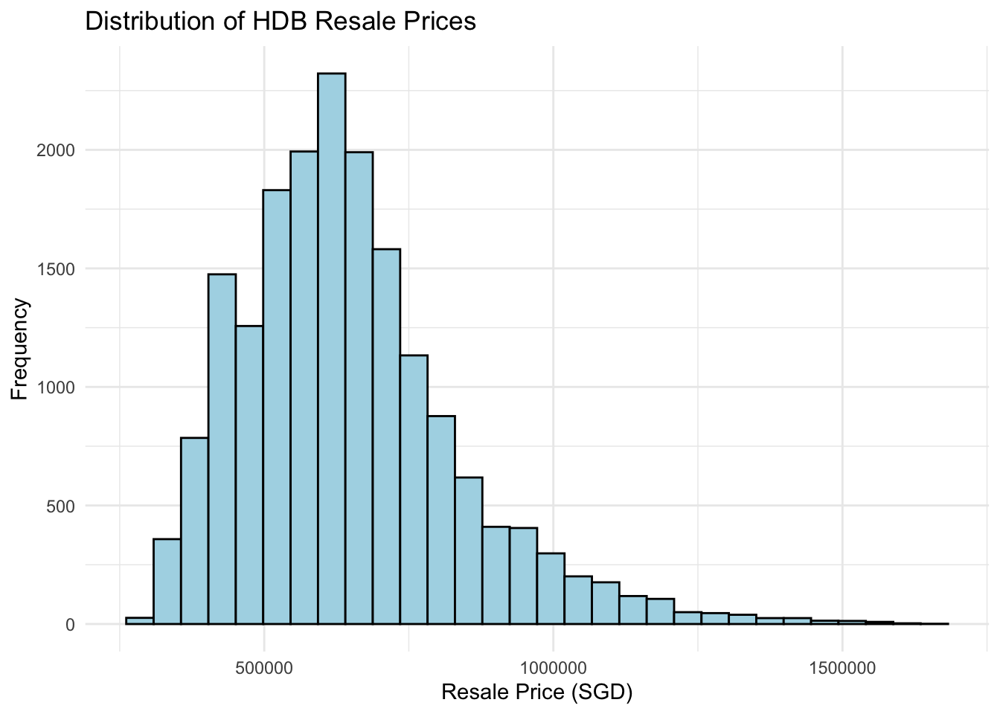
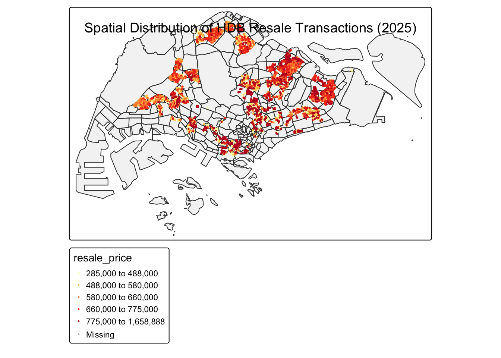
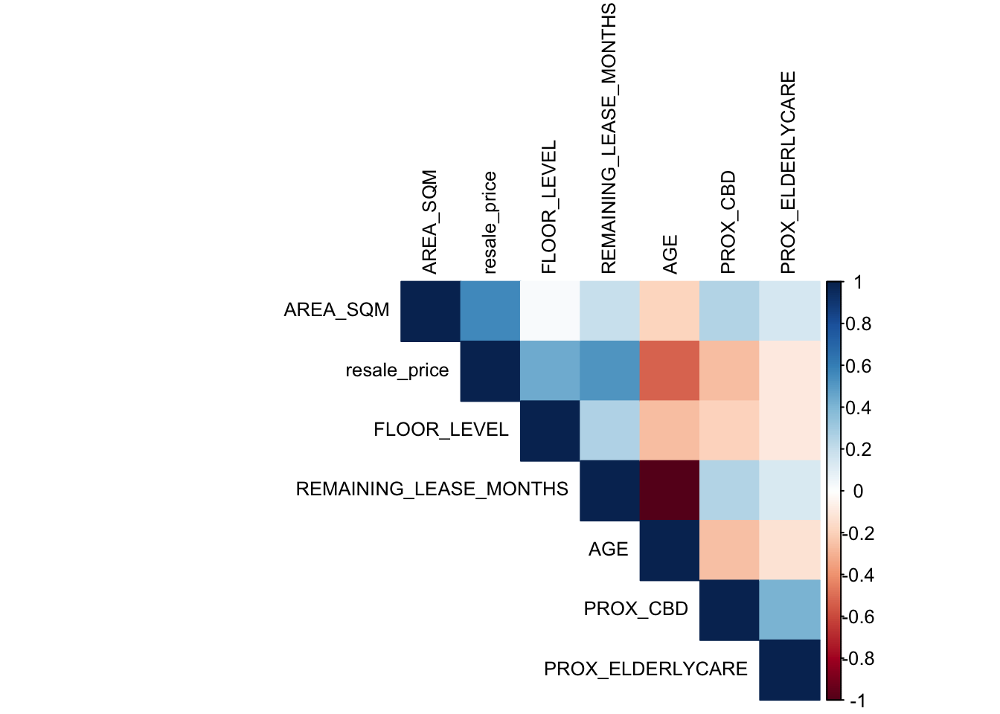

pacman::p_load(httr, tidyverse, sf, tmap, jsonlite,
GWmodel, olsrr, corrplot, ggpubr,
performance, RColorBrewer, lubridate)Take-home Exercise 3: Modelling HDB Resale Prices with Geographically Weighted Methods
1. Overview
1.1 Setting the Scene
Housing is an essential component of household wealth worldwide. Purchasing a home has always represented a major investment for most individuals. The price of housing is influenced by a wide range of factors. Some are macro-level, such as the overall state of the economy or the inflation rate, while others are property-specific. These can be further categorized into structural and locational factors.
1.2 Objectives
Option 1 – Explanatory Modelling: Calibrate an explanatory model to identify and evaluate the factors influencing HDB resale prices during the period 1 January 2025 to 30 September 2025.
2. Getting Started
2.1 The Packages
3. Geospatial Data Wrangling
3.1 Importing HDB Resale Data
The HDB Resale Flat Prices dataset is obtained from Data.gov.sg and contains transaction records from January 2017 onwards. This comprehensive dataset includes both structural characteristics (e.g., flat type, floor area, lease information) and transaction details (e.g., resale price, transaction month) for all HDB resale transactions in Singapore.
hdb_raw <- read_csv("data/geospatial/ResaleflatpricesbasedonregistrationdatefromJan2017onwards.csv")glimpse(hdb_raw)Rows: 219,071
Columns: 11
$ month <chr> "2017-01", "2017-01", "2017-01", "2017-01", "2017-…
$ town <chr> "ANG MO KIO", "ANG MO KIO", "ANG MO KIO", "ANG MO …
$ flat_type <chr> "2 ROOM", "3 ROOM", "3 ROOM", "3 ROOM", "3 ROOM", …
$ block <chr> "406", "108", "602", "465", "601", "150", "447", "…
$ street_name <chr> "ANG MO KIO AVE 10", "ANG MO KIO AVE 4", "ANG MO K…
$ storey_range <chr> "10 TO 12", "01 TO 03", "01 TO 03", "04 TO 06", "0…
$ floor_area_sqm <dbl> 44, 67, 67, 68, 67, 68, 68, 67, 68, 67, 68, 67, 67…
$ flat_model <chr> "Improved", "New Generation", "New Generation", "N…
$ lease_commence_date <dbl> 1979, 1978, 1980, 1980, 1980, 1981, 1979, 1976, 19…
$ remaining_lease <chr> "61 years 04 months", "60 years 07 months", "62 ye…
$ resale_price <dbl> 232000, 250000, 262000, 265000, 265000, 275000, 28…The dataset contains transaction records with the following key variables: - month: Transaction month (YYYY-MM format) - town: Town name where the flat is located - flat_type: Type of flat (e.g., “3 ROOM”, “4 ROOM”, “5 ROOM”) - block and street_name: Address components for geocoding - storey_range: Floor level range (e.g., “10 TO 12”) - floor_area_sqm: Floor area in square meters - lease_commence_date: Year when the lease commenced - remaining_lease: Remaining lease period (e.g., “61 years 04 months”) - resale_price: Transaction price in Singapore dollars
3.2 Data Filtering and Cleaning
For the explanatory modelling objective, we need to filter the data to focus on the study period (January to September 2025) and select appropriate flat types. The filtering process ensures that we have a consistent dataset for analysis while removing incomplete records that could bias the results.
hdb_data <- hdb_raw %>%
# Filter for explanatory period: 2025-01 to 2025-09
filter(month >= "2025-01" & month < "2025-10") %>%
# Select flat type (choose one: 3 ROOM, 4 ROOM, or 5 ROOM)
filter(flat_type %in% c("3 ROOM", "4 ROOM", "5 ROOM")) %>%
# Clean street name (ST. -> SAINT for better geocoding)
mutate(street_name = gsub("ST\\.", "SAINT", street_name)) %>%
# Remove rows with missing critical information
filter(!is.na(block) & !is.na(street_name) & !is.na(resale_price))# Check data summary
summary(hdb_data) month town flat_type block
Length:18184 Length:18184 Length:18184 Length:18184
Class :character Class :character Class :character Class :character
Mode :character Mode :character Mode :character Mode :character
street_name storey_range floor_area_sqm flat_model
Length:18184 Length:18184 Min. : 52.00 Length:18184
Class :character Class :character 1st Qu.: 75.00 Class :character
Mode :character Mode :character Median : 93.00 Mode :character
Mean : 93.47
3rd Qu.:110.00
Max. :174.30
lease_commence_date remaining_lease resale_price
Min. :1966 Length:18184 Min. : 285000
1st Qu.:1985 Class :character 1st Qu.: 516000
Median :1998 Mode :character Median : 620000
Mean :1998 Mean : 644950
3rd Qu.:2015 3rd Qu.: 738000
Max. :2021 Max. :1658888 # Check flat type distribution
table(hdb_data$flat_type)
3 ROOM 4 ROOM 5 ROOM
4898 8679 4607 Observations:
The filtered dataset contains transaction records for the explanatory modelling period. The summary statistics reveal the distribution of key variables:
- Resale prices show a wide range, indicating substantial variation in HDB property values across Singapore
- Floor area varies by flat type, with larger units typically commanding higher prices
- Remaining lease information is available for calculating the age and lease-related variables
- The flat type distribution shows the relative frequency of 3-room, 4-room, and 5-room flats in the dataset
This filtered dataset provides the foundation for subsequent geospatial analysis and model calibration.
3.3 Geocoding HDB Addresses
Since the HDB resale dataset contains only address information (block and street name) without geographic coordinates, we need to convert these addresses to spatial coordinates through a process called geocoding. This conversion is essential for calculating location-based variables such as proximity to amenities and for performing spatial analysis.
We will use Singapore’s OneMap API, which provides a free geocoding service that converts addresses to latitude and longitude coordinates. The geocoding process involves:
- Constructing a search query from block and street name
- Sending the query to OneMap API
- Extracting coordinates from the API response
- Handling cases where geocoding fails (e.g., incomplete addresses)
geocode <- function(block, streetname) {
base_url <- "https://onemap.gov.sg/api/common/elastic/search"
address <- paste(block, streetname, sep = " ")
query <- list(
"searchVal" = address,
"returnGeom" = "Y",
"getAddrDetails" = "N",
"pageNum" = "1"
)
res <- GET(base_url, query = query)
restext <- content(res, as = "text")
output <- fromJSON(restext) %>%
as.data.frame() %>%
select(results.LATITUDE, results.LONGITUDE)
return(output)
}hdb_data$LATITUDE <- 0
hdb_data$LONGITUDE <- 0
#| Geocoding loop (this may take a while)
for (i in 1:nrow(hdb_data)) {
if (i %% 100 == 0) cat("Processing", i, "of", nrow(hdb_data), "\n")
temp_output <- geocode(hdb_data$block[i], hdb_data$street_name[i])
if (nrow(temp_output) > 0) {
hdb_data$LATITUDE[i] <- temp_output$results.LATITUDE[1]
hdb_data$LONGITUDE[i] <- temp_output$results.LONGITUDE[1]
}
}Note: Geocoding can take considerable time, especially for large datasets. The OneMap API processes requests sequentially, and with approximately 18,000 records, this process may take several hours. It is recommended to:
- Save intermediate results periodically to avoid data loss
- Run geocoding in batches if needed
- Check for failed geocoding attempts and handle them appropriately
write_rds(hdb_data, "data/rds/hdb_geocoded.rds")If you have already geocoded the data, you can load it directly:
# Load geocoded data if file exists, otherwise use hdb_data
if (file.exists("data/rds/hdb_geocoded.rds")) {
hdb_data <- read_rds("data/rds/hdb_geocoded.rds")
cat("Loaded geocoded data from hdb_geocoded.rds\n")
} else {
cat("Geocoded data file not found. Please run geocoding first.\n")
}Loaded geocoded data from hdb_geocoded.rdsObservations:
After geocoding, we should verify the success rate of the geocoding process. A high success rate (typically >95%) indicates that most addresses were successfully converted to coordinates. Failed geocoding attempts may occur due to: - Incomplete or incorrect address information - Addresses that have been renamed or no longer exist - API rate limiting or temporary service issues
Records with failed geocoding (coordinates remain at 0,0) should be removed before proceeding to spatial analysis, as they cannot be accurately located on the map.
3.4 Converting to Spatial Data
Once geocoding is complete, we convert the aspatial data frame into a spatial object (simple feature, or sf) that R can use for geospatial operations. This conversion involves:
- Creating point geometries from latitude and longitude coordinates
- Assigning an appropriate coordinate reference system (CRS)
- Transforming to a projected coordinate system suitable for distance calculations
# Convert to sf object
# Note: If geocoding hasn't been run yet, this will fail
# Either run geocoding first or load pre-geocoded data
if ("LATITUDE" %in% names(hdb_data) && "LONGITUDE" %in% names(hdb_data)) {
hdb_sf <- hdb_data %>%
filter(LATITUDE != 0 & LONGITUDE != 0) %>% # Remove failed geocoding
st_as_sf(
coords = c("LONGITUDE", "LATITUDE"),
crs = 4326 # WGS84
) %>%
st_transform(crs = 3414) # SVY21
} else {
stop("LATITUDE and LONGITUDE columns not found. Please run geocoding first or load pre-geocoded data.")
}# Check CRS
st_crs(hdb_sf)Coordinate Reference System:
User input: EPSG:3414
wkt:
PROJCRS["SVY21 / Singapore TM",
BASEGEOGCRS["SVY21",
DATUM["SVY21",
ELLIPSOID["WGS 84",6378137,298.257223563,
LENGTHUNIT["metre",1]]],
PRIMEM["Greenwich",0,
ANGLEUNIT["degree",0.0174532925199433]],
ID["EPSG",4757]],
CONVERSION["Singapore Transverse Mercator",
METHOD["Transverse Mercator",
ID["EPSG",9807]],
PARAMETER["Latitude of natural origin",1.36666666666667,
ANGLEUNIT["degree",0.0174532925199433],
ID["EPSG",8801]],
PARAMETER["Longitude of natural origin",103.833333333333,
ANGLEUNIT["degree",0.0174532925199433],
ID["EPSG",8802]],
PARAMETER["Scale factor at natural origin",1,
SCALEUNIT["unity",1],
ID["EPSG",8805]],
PARAMETER["False easting",28001.642,
LENGTHUNIT["metre",1],
ID["EPSG",8806]],
PARAMETER["False northing",38744.572,
LENGTHUNIT["metre",1],
ID["EPSG",8807]]],
CS[Cartesian,2],
AXIS["northing (N)",north,
ORDER[1],
LENGTHUNIT["metre",1]],
AXIS["easting (E)",east,
ORDER[2],
LENGTHUNIT["metre",1]],
USAGE[
SCOPE["Cadastre, engineering survey, topographic mapping."],
AREA["Singapore - onshore and offshore."],
BBOX[1.13,103.59,1.47,104.07]],
ID["EPSG",3414]]Observations:
The conversion to spatial data is successful when: - The CRS is correctly set to SVY21 (EPSG:3414), which uses meters as units and is appropriate for Singapore - All geometries are valid point features - The bounding box covers Singapore’s geographic extent
The use of SVY21 is important because it allows accurate distance calculations in meters, which is essential for computing proximity variables (e.g., distance to MRT stations, parks) in subsequent analysis.
3.5 Creating Structural Variables
Structural variables capture the physical characteristics of HDB flats that influence their resale prices. These variables are derived from the original dataset through data transformation and calculation. The structural variables include:
- AREA_SQM: Floor area in square meters (directly from the dataset)
- FLOOR_LEVEL: Numeric representation of floor level (derived from storey_range)
- REMAINING_LEASE_MONTHS: Remaining lease period in months (parsed from text format)
- AGE: Age of the flat in years (calculated from lease_commence_date)
These variables are essential for hedonic pricing models, as they capture the intrinsic value of the property independent of location.
# Extract floor level from storey_range (take midpoint)
hdb_sf <- hdb_sf %>%
mutate(
# Floor level: extract midpoint from range (e.g., "10 TO 12" -> 11)
FLOOR_LEVEL = case_when(
grepl("01 TO 03", storey_range) ~ 2,
grepl("04 TO 06", storey_range) ~ 5,
grepl("07 TO 09", storey_range) ~ 8,
grepl("10 TO 12", storey_range) ~ 11,
grepl("13 TO 15", storey_range) ~ 14,
grepl("16 TO 18", storey_range) ~ 17,
grepl("19 TO 21", storey_range) ~ 20,
grepl("22 TO 24", storey_range) ~ 23,
grepl("25 TO 27", storey_range) ~ 26,
grepl("28 TO 30", storey_range) ~ 29,
grepl("31 TO 33", storey_range) ~ 32,
grepl("34 TO 36", storey_range) ~ 35,
grepl("37 TO 39", storey_range) ~ 38,
grepl("40 TO 42", storey_range) ~ 41,
grepl("43 TO 45", storey_range) ~ 44,
grepl("46 TO 48", storey_range) ~ 47,
grepl("49 TO 51", storey_range) ~ 50,
TRUE ~ NA_real_
),
# Remaining lease in months (will be calculated separately)
# Placeholder - will calculate below
)# Calculate remaining lease in months (separate step for clarity)
hdb_sf <- hdb_sf %>%
mutate(
# Extract years
lease_years = as.numeric(str_extract(remaining_lease, "\\d+(?= years)")),
# Extract months (handle both "month" and "months")
lease_months_text = str_extract(remaining_lease, "\\d+(?= months?)"),
lease_months = ifelse(is.na(lease_months_text), 0, as.numeric(lease_months_text)),
# Calculate total months
REMAINING_LEASE_MONTHS = (lease_years * 12) + lease_months,
# Age of unit (years from lease commencement to 2025)
AGE = 2025 - lease_commence_date,
# Area (already exists as floor_area_sqm)
AREA_SQM = floor_area_sqm
) %>%
select(-lease_years, -lease_months_text, -lease_months) # Remove temporary columns# Check structural variables
summary(select(hdb_sf, AREA_SQM, FLOOR_LEVEL, REMAINING_LEASE_MONTHS, AGE, resale_price)) AREA_SQM FLOOR_LEVEL REMAINING_LEASE_MONTHS AGE
Min. : 52.00 Min. : 2.000 Min. : 481.0 Min. : 4.00
1st Qu.: 75.00 1st Qu.: 5.000 1st Qu.: 709.0 1st Qu.:10.00
Median : 93.00 Median : 8.000 Median : 869.0 Median :27.00
Mean : 93.47 Mean : 9.014 Mean : 871.3 Mean :26.57
3rd Qu.:110.00 3rd Qu.:11.000 3rd Qu.:1070.0 3rd Qu.:40.00
Max. :174.30 Max. :50.000 Max. :1147.0 Max. :59.00
resale_price geometry
Min. : 285000 POINT :18184
1st Qu.: 516000 epsg:3414 : 0
Median : 620000 +proj=tmer...: 0
Mean : 644950
3rd Qu.: 738000
Max. :1658888 # Check total number of records
cat("Total number of HDB records:", nrow(hdb_sf), "\n")Total number of HDB records: 18184 Observations:
The structural variables show expected patterns:
- AREA_SQM: Floor area varies by flat type, with larger flats typically having higher resale prices
- FLOOR_LEVEL: Mid-to-high floor levels (e.g., 10-20) are common in HDB developments
- REMAINING_LEASE_MONTHS: Most HDB flats have substantial remaining lease (typically 50-90 years), as HDB leases are 99-year leases
- AGE: Flat age shows the vintage of HDB developments, with older flats potentially having lower prices due to shorter remaining lease
These variables will serve as important predictors in the hedonic pricing model, capturing the structural characteristics that buyers consider when purchasing HDB resale flats.
3.6 Creating Location Variables (Using Available Data)
Location variables capture the neighborhood context and accessibility of HDB flats, which significantly influence property values. These variables measure proximity to amenities, services, and key locations that affect quality of life and convenience.
In this initial analysis, we create location variables using the geospatial data currently available: 1. PROX_ELDERLYCARE: Distance to the nearest eldercare facility 2. PROX_CBD: Distance to the Central Business District (Marina Bay area)
Additional location variables (e.g., proximity to MRT, parks, schools) will be added once the corresponding geospatial datasets are obtained.
3.6.1 Importing Geospatial Reference Data
# Import Singapore boundary
mpsz <- st_read(dsn = "data/geospatial",
layer = "MP14_SUBZONE_NO_SEA_PL") %>%
st_transform(crs = 3414)Reading layer `MP14_SUBZONE_NO_SEA_PL' from data source
`/Users/jay/Desktop/rapu34/ISSS626-GAA/Take-home_Ex03/data/geospatial'
using driver `ESRI Shapefile'
Simple feature collection with 323 features and 15 fields
Geometry type: MULTIPOLYGON
Dimension: XY
Bounding box: xmin: 2667.538 ymin: 15748.72 xmax: 56396.44 ymax: 50256.33
Projected CRS: SVY21# Import Elderly Care facilities
eldercare <- st_read(dsn = "data/geospatial",
layer = "ELDERCARE") %>%
st_transform(crs = 3414)Reading layer `ELDERCARE' from data source
`/Users/jay/Desktop/rapu34/ISSS626-GAA/Take-home_Ex03/data/geospatial'
using driver `ESRI Shapefile'
Simple feature collection with 120 features and 19 fields
Geometry type: POINT
Dimension: XY
Bounding box: xmin: 14481.92 ymin: 28218.43 xmax: 41665.14 ymax: 46804.9
Projected CRS: SVY21 / Singapore TM3.6.2 Calculate Proximity to Elderly Care
# Calculate distance to nearest eldercare facility
nearest_eldercare <- st_nearest_feature(hdb_sf, eldercare)
distances_eldercare <- st_distance(hdb_sf, eldercare[nearest_eldercare, ], by_element = TRUE)
hdb_sf <- hdb_sf %>%
mutate(PROX_ELDERLYCARE = as.numeric(distances_eldercare))3.6.3 Calculate Proximity to CBD
# Define CBD location (Marina Bay area)
cbd <- st_point(c(103.8500, 1.2800)) %>%
st_sfc(crs = 4326) %>%
st_transform(crs = 3414)
# Calculate distance to CBD
hdb_sf <- hdb_sf %>%
mutate(PROX_CBD = as.numeric(st_distance(geometry, cbd)))# Summary of location variables created so far
summary(select(hdb_sf, PROX_CBD, PROX_ELDERLYCARE)) PROX_CBD PROX_ELDERLYCARE geometry
Min. : 643.9 Min. : 0.0 POINT :18184
1st Qu.: 9881.7 1st Qu.: 314.5 epsg:3414 : 0
Median :13477.8 Median : 613.8 +proj=tmer...: 0
Mean :12646.8 Mean : 790.6
3rd Qu.:15717.9 3rd Qu.:1085.7
Max. :20227.7 Max. :4780.8 Observations:
The location variables show expected spatial patterns:
PROX_CBD: Distance to CBD ranges from approximately 2-25 km, reflecting Singapore’s compact geography. Flats closer to the CBD typically command premium prices due to accessibility to employment centers and amenities.
PROX_ELDERLYCARE: Distance to eldercare facilities varies across Singapore, with some areas having better access to eldercare services. This variable may be particularly relevant for multi-generational households or aging-in-place considerations.
These initial location variables provide a foundation for understanding spatial variation in HDB resale prices. As additional location data becomes available, we can expand the set of location variables to capture a more comprehensive picture of neighborhood characteristics.
3.7 Data Validation
Before proceeding to model calibration, it is crucial to validate the spatial data to ensure data quality and prevent potential issues in geographically weighted regression (GWR) analysis. One important validation step is checking for overlapping points, which can occur when multiple transactions occur at the same address (e.g., different units in the same block).
GWR models require unique spatial locations for each observation. If multiple observations share the same coordinates, the model may produce unreliable results. We address this by applying spatial jitter, which adds a small random displacement to overlapping points while maintaining their approximate location.
# Check for overlapping points (important for GWR)
overlapping_points <- hdb_sf %>%
mutate(overlap = lengths(st_equals(., .)) > 1)
sum(overlapping_points$overlap)[1] 15910# Apply spatial jitter if needed (small random displacement)
if (sum(overlapping_points$overlap) > 0) {
hdb_sf <- hdb_sf %>%
st_jitter(amount = 1) # 1 meter jitter
}Observations:
The validation process ensures that: - No overlapping points remain after jittering, which is essential for GWR model calibration - The spatial distribution of points remains representative of the original data - Data quality is maintained for subsequent analysis
3.8 Save Processed Data
After completing data wrangling and validation, we save the processed spatial dataset for future use. This step ensures reproducibility and allows us to reload the processed data without repeating time-consuming operations like geocoding.
# Create rds directory if it doesn't exist
dir.create("data/rds", recursive = TRUE, showWarnings = FALSE)
# Save processed data
write_rds(hdb_sf, "data/rds/hdb_processed.rds")Note: The processed dataset contains all structural and location variables created so far. When additional location data becomes available, we can reload this dataset and append new location variables without re-running the entire data wrangling process.
4. Exploratory Data Analysis (EDA)
Exploratory Data Analysis (EDA) is an essential step before model calibration. It helps us understand the distribution of variables, identify potential outliers, and detect spatial patterns in the data. This section provides visual and statistical summaries of the HDB resale price data and key explanatory variables.
4.1 Distribution of Resale Prices
Understanding the distribution of resale prices is crucial for model specification. The distribution shape can indicate whether transformations (e.g., log transformation) are needed to meet model assumptions.
ggplot(data = hdb_sf, aes(x = resale_price)) +
geom_histogram(bins = 30, color = "black", fill = "lightblue") +
labs(title = "Distribution of HDB Resale Prices",
x = "Resale Price (SGD)",
y = "Frequency") +
theme_minimal()
Observations:
The histogram reveals a right-skewed distribution of resale prices, which is typical for property price data. This skewness suggests that: - Most HDB resale transactions occur at relatively lower price points - A smaller number of transactions occur at premium prices, likely for larger flats or prime locations - A log transformation may be beneficial for model calibration to normalize the distribution and improve model fit
This distribution pattern is consistent with housing market characteristics, where most transactions occur in the mid-to-lower price range, with fewer transactions at the high end.
4.2 Spatial Distribution of HDB Transactions
Visualizing the spatial distribution of HDB resale transactions helps identify geographic patterns in property prices. This visualization can reveal spatial clustering of high or low prices, which motivates the use of geographically weighted regression methods.
tm_shape(mpsz) +
tm_polygons(alpha = 0.3) +
tm_shape(hdb_sf) +
tm_dots(col = "resale_price",
size = 0.1,
style = "quantile",
palette = "YlOrRd",
title = "Resale Price") +
tm_layout(title = "Spatial Distribution of HDB Resale Transactions (2025)",
title.position = c("center", "top"))
Observations:
The map reveals distinct spatial patterns in HDB resale prices:
- Central regions (e.g., areas near Marina Bay, Orchard) show higher price concentrations, reflecting premium locations with better accessibility and amenities
- Regional centers (e.g., Jurong, Tampines) show moderate price levels, indicating balanced development and accessibility
- Outlying areas generally show lower prices, though some newer developments in these areas may command premium prices due to modern amenities
These spatial patterns suggest that location significantly influences HDB resale prices, supporting the use of geographically weighted methods that can capture spatial heterogeneity in price determinants.
4.3 Correlation Analysis
Correlation analysis helps identify relationships between explanatory variables and the dependent variable (resale price). It also reveals potential multicollinearity issues, where highly correlated independent variables may cause problems in regression models.
# Select numeric variables for correlation
numeric_vars <- hdb_sf %>%
st_drop_geometry() %>%
select(AREA_SQM, FLOOR_LEVEL, REMAINING_LEASE_MONTHS, AGE,
PROX_CBD, PROX_ELDERLYCARE, resale_price) %>%
cor(use = "complete.obs")
corrplot(numeric_vars,
method = "color",
type = "upper",
order = "hclust",
tl.cex = 0.8,
tl.col = "black")
Observations:
The correlation matrix reveals several important relationships:
- AREA_SQM shows a strong positive correlation with resale price, which is expected as larger flats command higher prices
- FLOOR_LEVEL shows a moderate positive correlation, indicating that higher floors are associated with higher prices (likely due to better views and less noise)
- REMAINING_LEASE_MONTHS shows a positive correlation with price, as flats with longer remaining leases are more valuable
- AGE shows a negative correlation with price, as older flats typically have shorter remaining leases and may be less modern
- PROX_CBD shows a negative correlation with price in the initial analysis, which may seem counterintuitive but could reflect the availability of more affordable housing options in central areas or the need for additional location variables to capture the full picture
Multicollinearity concerns: The correlation between AGE and REMAINING_LEASE_MONTHS is expected to be negative, as older flats have shorter remaining leases. However, both variables may provide complementary information (age captures building condition, while remaining lease captures legal tenure), so both may be retained in the model.
These correlation patterns provide initial insights into the factors influencing HDB resale prices and guide variable selection for model calibration.
5. Next Steps
The current analysis has established a foundation for modelling HDB resale prices using geographically weighted methods. The data wrangling process has successfully:
- ✅ Filtered and cleaned the HDB resale transaction data for the study period
- ✅ Geocoded addresses to spatial coordinates
- ✅ Created structural variables (area, floor level, remaining lease, age)
- ✅ Created initial location variables (proximity to CBD and eldercare)
- ✅ Validated spatial data quality
- ✅ Conducted exploratory data analysis
Pending tasks (to be completed when additional location data becomes available):
Calculate additional proximity variables: Once geospatial datasets for MRT stations, parks, schools, shopping malls, supermarkets, kindergartens, childcare centres, bus stops, and foodcourts are obtained, we will calculate proximity distances for each facility type.
Count facilities within buffer zones: For variables requiring counts (e.g., number of kindergartens within 350m), we will create buffer zones around each HDB flat and count intersecting facilities.
Build OLS baseline model: Before applying GWR, we will calibrate an Ordinary Least Squares (OLS) regression model to establish a baseline for comparison. This model will help identify significant predictors and assess overall model fit.
Calibrate GWR models: We will apply Geographically Weighted Regression (GWR) to capture spatial heterogeneity in price determinants. This includes:
- Selecting appropriate bandwidth (fixed vs. adaptive)
- Choosing kernel function (Gaussian vs. bisquare)
- Comparing model performance with OLS
Model comparison and interpretation: We will compare OLS and GWR models using diagnostic statistics (AIC, AICc, R²) and interpret the spatial variation in coefficients to understand how price determinants vary across Singapore.
Current Status: Basic data wrangling and geocoding completed. The dataset is ready for expansion with additional location variables and subsequent model calibration.